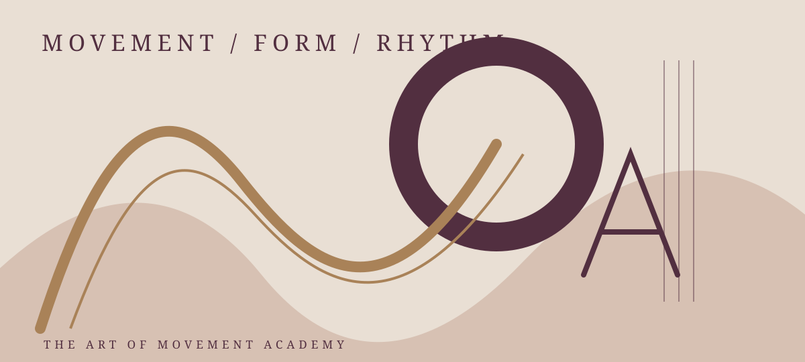

Term I / Progressive weekly studio
Weekly Studio
A day-by-day studio experience with practice assignments, technique goals and evidence tracking. Unavailable instructor footage is labeled, never represented as a playable class.

The gym is an independent five-day program. Keep sets, reps and rest in the strength log; no lifting videos are required. Add 5–10 minutes gentle mobility daily. Only do supported, pain-free beginner acro readiness; no unsupervised inversions or tumbling.